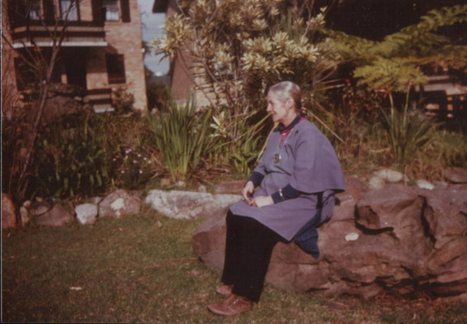
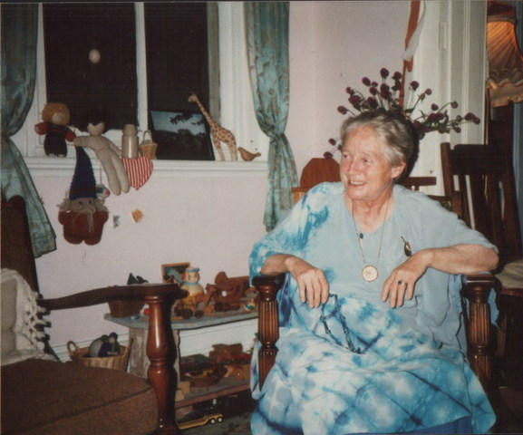
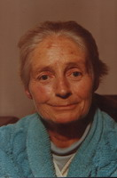
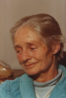
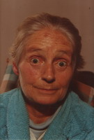
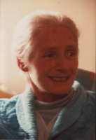
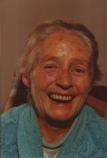

Portraits of later days


The following series of photographs was taken just prior to Mechthild’s death in July 1987.





Mechthild Harkness (20.3.20–25.7.86)
In the morning hours of the 25th July, shortly before the sun fought its battle with the stormy cold conditions of the most wintry weather since the turn of this century, Mechthild Harkness crossed the threshold from this sense world at 9.15 a.m. A dramatic elemental act was accompanying her exit, and at moments during the day, friends observed some peaceful rays of sun filtering through the grey turmoil of clouds, opening the curtains for her entry into the new world.
The Life of Mechthild Harkness
In whatever part Mechthild acted one experienced that she had full command of all her artistic faculties. She could leave herself as a person behind, and unite so much as an actor with the substance of the word and content, with gesture and voice, that the elemental world would be present. In her last hours she lay peacefully whilst the drama now was being performed by the elements themselves in her environment.
Mechthild lived her life’s path true to her own personality. She stayed independent, defiant for her cause, strong and upright in the face of work and denying her ailing body up to death.
Mechthild embodied speech and drama, and in her last hour, already unable to verbally reply any longer, when she was told how much her friends loved her work, that they were grateful for what she has given, and that her work will live on, she spoke with a radiant smile, already permeated by her spirit-self.
Mechthild did not stand for ceremonies: she went straight to the point of her work with her remarkable individual determination, even to the end. She left instructions that she would not want a funeral service, nor any religious ceremony. Only Mechthild could do such a thing in style, since she had filled her friends with strength, with substance of the Word, so that they could be with her in spirit and yet could leave her free to do what eventually everyone must learn to do, to cross the threshold alone. Alone, and yet in company: that was the essence of Mechthild’s life.
Mechthild, who was born in Dornach, and named by Rudolf Steiner (her name means ‘Mighty Maiden’), gave the short account of her life which was published in October 1981 in this Journal, from which the following excerpt is taken:
Mechthild was surrounded by artistic activity from her earliest years, participating in performances even as a very young child. Her mother, Lucy Neuscheller, was one of the very early Eurythmists under Rudolf Steiner and brought the art of Eurythmy to the U.S.A. In her youth Mechthild attended a number of drama schools and trained in Opera. The family returned to Dornach for a few years where Mechthild first met Alice Crowther who was then doing her speech training with Erna Grund and her Eurythmy training with Friedel Thomas. Back in New York, Mechthild trained in Eurythmy and met her Australian husband, Alan Harkness, who was then working with the Chekhov Theatre Studio. When the Chekhov Studio disbanded, Alan went to California where Mechthild joined him. In 1949–51 she and Alan toured Europe and America with their duo performance of Great Moments from Shakespeare and spent time studying with Erna Grund in Dornach. They returned to America where Alan was tragically killed in 1952. In 1954 Mechthild returned to Dornach and received her Diploma in formative speech, graduating in the same year as Virginia Brett. She remained in Dornach for the next twelve years, teaching, performing and producing. In 1967 Francis Edmunds asked her to set up a Speech and Drama Department at Emerson College where she worked for the two years prior to her arrival in Australia.
In July 1969, the first classes commenced in Sydney with Mechthild teaching Speech, Eurythmy, Greek Gymnastics, Improvisation and Drama. Marj Waugh, who had been carrying the Eurythmy work after her many years with Alice Crowther, and Doug Waugh, connected with the early drama work of Lute Drummond, came along to give their blessing. A much appreciated and continuing support has come from an early student, Garry Richardson.
In particular, the late Dennis Glenny, who left us two years ago, close to the same July date as Mechthild’s passing, was deeply committed to supporting and furthering her work.
So she began her work in Australia with the powers of independence, inwardly centred on the work of speech and drama. Outwardly restless in her destiny, which took her 24 times across the Atlantic from Dornach to the States and back, and also here in Australia, she moved her studio at various times from one place to another, every time starting anew. But wherever she worked she left her imprint.
In the Studio in Sydney she attracted students from all over the world. Young enthusiasts came from Israel, England, South Africa, America, and from Dornach, to study with Mechthild. Her speech formation was so outstanding that her work became the centre for the English speaking speech impulse. She was authorised to give the successful pupil a ‘Goetheanum’ diploma on behalf of the section for the Arts. Every year a new group of students would join her course, and when her pupils and friends gathered three days after her death to share memories, they all sat together around a large circle of two rows. There were many friends, and yet these were only those who had worked with her during the last years and thus we needed to imagine on that occasion many, many more such circles of friends around Mechthild, the friends of the early times of Lorien-Novalis School, the friends of the formative youth movement of 1970 in the Anthroposophical Society, the friends of Emerson College, and of the thirteen years at the Goetheanum and then in the United States and, last but not least, those of her early childhood, her sister and her husband, the early Anthroposophists, closing the circle from the beginning of her earthly path to her last act on this southern continent Australia, which she so dearly loved and into which she spoke so strongly with her powerful spirit and the true formative word.
Her work will live on, and we shall be conscious of her in the coming Summer Conference, which will be on the theme of The Renewal of the Word, so that she will further her intentions in the word, so that she can bring further nourishment to speech formation.
— Karl Kaltenbach
Stars once spoke to men,
their growing silent is world destiny.
Awareness of this silence can be pain
for earthly man.
Yet in the muted silence
there now ripens
what men speak to the stars:
Awareness of this speaking
can become strength
for Spirit-Man.— Rudolf Steiner